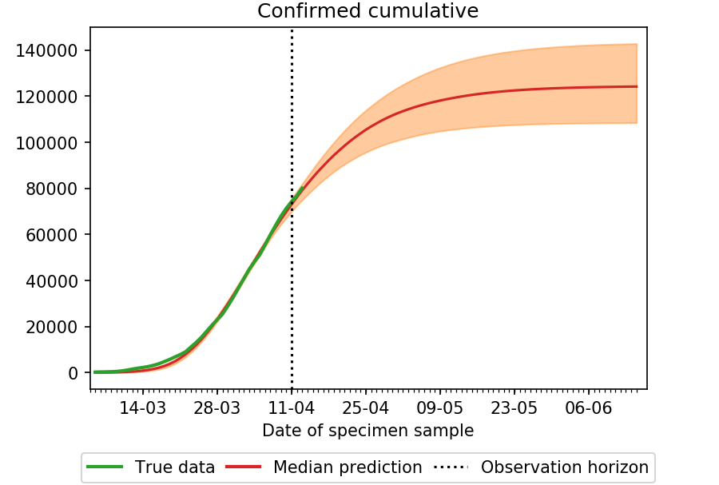
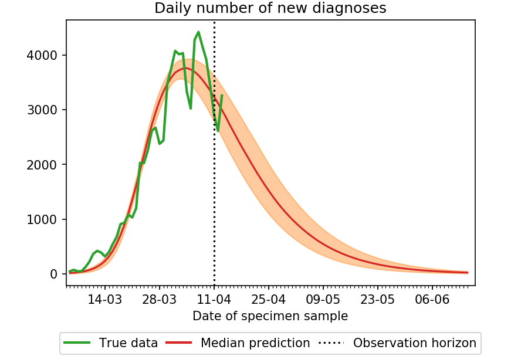
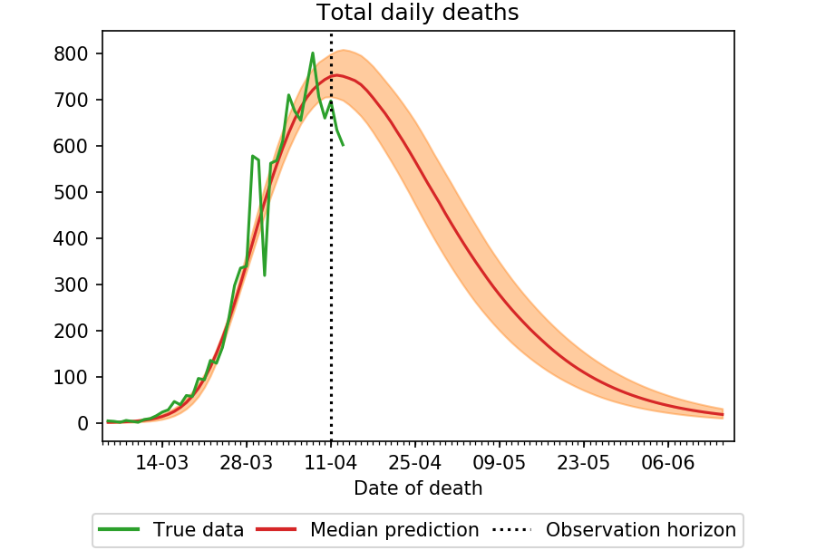
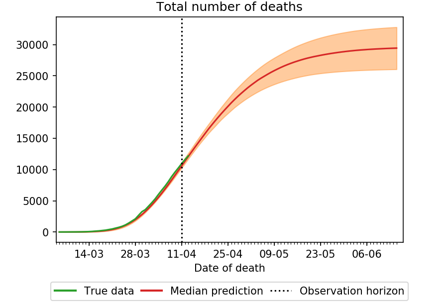
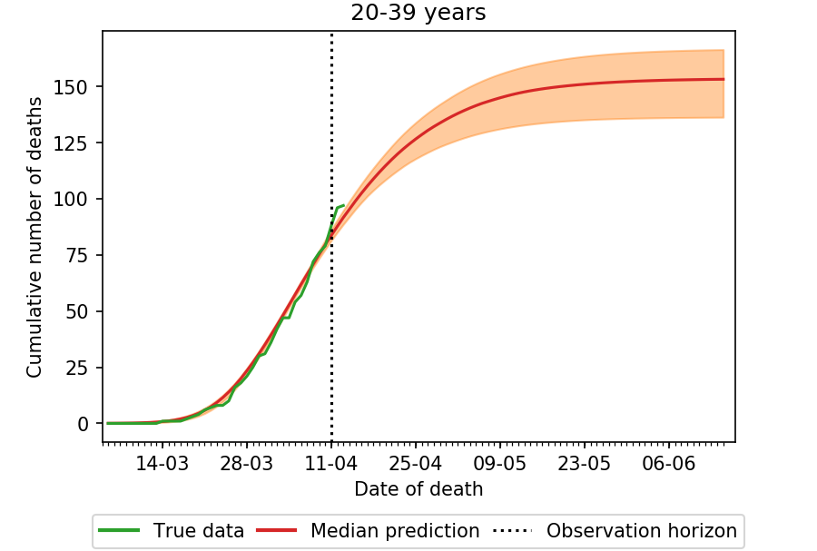
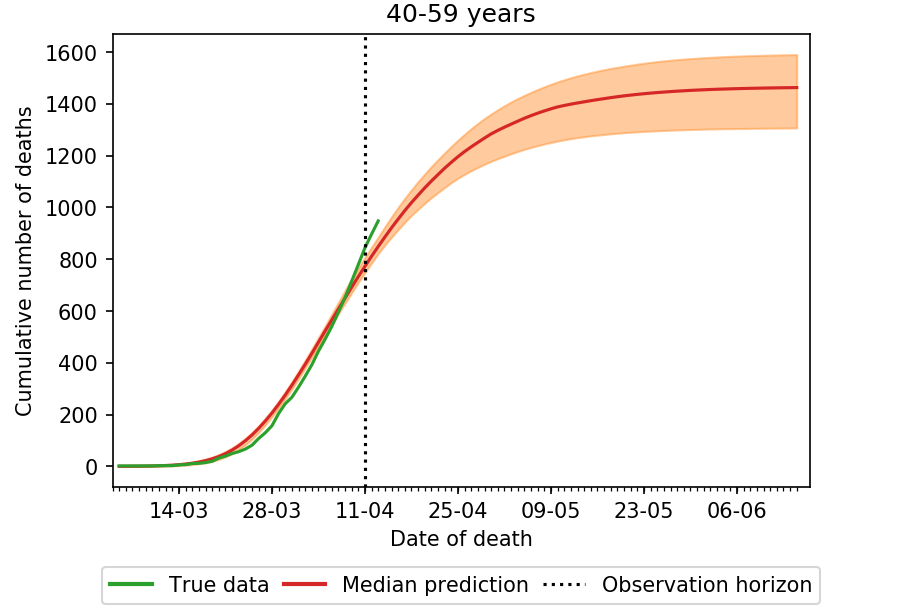
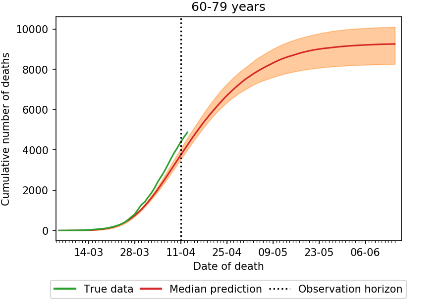
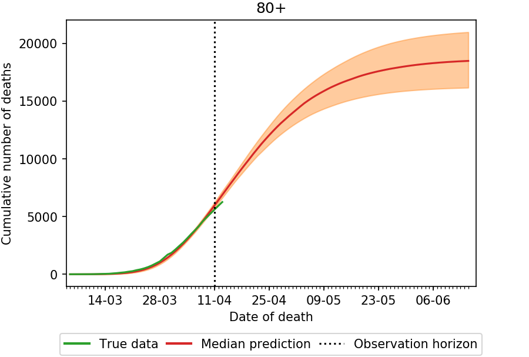
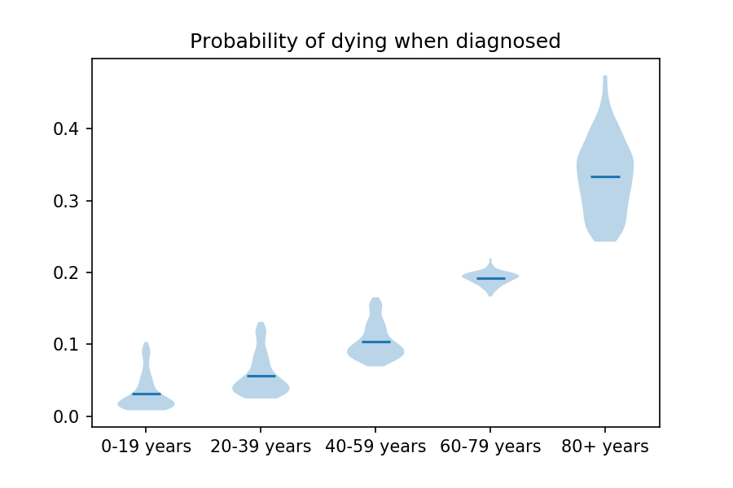

Predictions for England (Updated on 11th April)¶
Number of infected¶
Prediction of the cumulative total number of infected people who are diagnosed (most of them needing hospitalisation), the daily number of new diagnoses, the number of infectious people.
Infected & Hospitalized
(Orange shaded area indicates uncertainty)
Daily new diagnoses
(Orange shaded area indicates uncertainty)
The dotted vertical line denotes the observation horizon, the day up to which the observed data was used for fitting the model (11th April); after we’ve done the fit, data until the 13th became available, so we plot those as well, in order to check how our predictions match reality.
Number of deaths in hospital¶
Prediction of the number of deaths in hospital per day and total number of deaths.
Deaths per day
(Orange shaded area indicates uncertainty)
According to this model, we are right now close at the peak of number of deaths per day.
Total deaths
(Orange shaded area indicates uncertainty)
The dotted vertical line denotes the observation horizon, the day up to which the observed data was used for fitting the model (11th April); after we’ve done the fit, data until the 13th became available, so we plot those as well, in order to check how our predictions match reality. Note that deaths are considered by the date they actually happened, not by reporting date; this is why we are not able to use data more recent than 5 days ago, as reporting takes some time.
Deaths in hospital in each age group¶
Prediction of total number of deaths in the 5 age groups: \(0-19, 20-39, 40-59, 60-79, 80+\), versus the day the deaths actually happened.
0-19
(Orange shaded area indicates uncertainty)
20-39
(Orange shaded area indicates uncertainty)
40-59
60-79
(Orange shaded area indicates uncertainty)
80+
(Orange shaded area indicates uncertainty)
Age-specific probabilities¶
From our model, we estimate two age-dependent probabilities of (a) needing hospitalization when infected and (b) death when confirmed positive; we remark again that diagnosis happen in most part when people need clinical care in hospital.
Death in hospital
The horizontal line is the median prediction, while the bands width indicates the probability distribution for each value.
Assumptions: Our predictions are done under the assumption that the conditions in the UK remain the following, ie:
Tested people are composed mostly of the ones which are admitted into hospital, or at least they will isolate themselves when tested positive; this is reasonable according to what said on this government webpage which reports that, as of the 15th of April, 390,731 out of 417,649 tests were done in the “pillar 1” category, which includes mostly people with a medical need in hospitals and, whenever lab capacity allows that, the most critical NHS workers, as further detailed here
Restrictive measures as of the 11th April will be kept in place for the prediction horizon; the government announced that such restrictive measures will be kept in place for at least three weeks starting from the 16th of April.
Once people are tested positive and admitted into hospital, they are isolated, not being able anymore of transmitting the infection.
Conditions about hospital use remain more or less constants; specifically, we do not explicitly model the occupation of hospital beds and ICUs, which, if saturated, can have a large impact on the death rate of the disease.
Moreover, a key assumption of this model is that a person cannot catch the disease twice; this is still matter of debate; however, even if this were the case, we expect it not to change too much the dynamics of the epidemics in a first phase, in which a great part of the population is still susceptible anyway. It would of course matter a lot in the long time dynamics.
For more details please check Epidemic model, approximate Bayesian computation and Data sources.